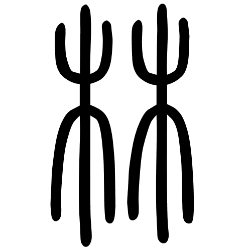

<footer>
    <div class="logo"></div>
    <!-- <div>
        <ul class="footer-nav-links">
            <li>
                <a routerLink="/">Home</a>
            </li>
            <li>
                <a routerLink="/about">About</a>
            </li>
            <li>
                <a routerLink="/gallery">Gallery</a>
            </li>
            <li>
                <a routerLink="/ytdl">Ytdl</a>
            </li>
        </ul>
    </div> -->
    <div class="social-medias">
        <a href="">
            <span style="font-size: 12px; color: rgb(32, 32, 32);">
                <i class="fab fa-facebook-square fa-5x"></i>
            </span>
        </a>
        <a href="https://github.com/clock1998">
            <span style="font-size: 12px; color: rgb(32, 32, 32);">
                <i class="fab fa-git-square fa-5x"></i>
            </span>
        </a>
        <a href="https://www.linkedin.com/in/linyi-jiang/">
            <span style="font-size: 12px; color: rgb(32, 32, 32);">
                <i class="fab fa-linkedin fa-5x"></i>
            </span>
        </a>
    </div>
    <div>
        <small>&copy; Copyright 2019, Linyi Jiang</small>
    </div>
</footer>